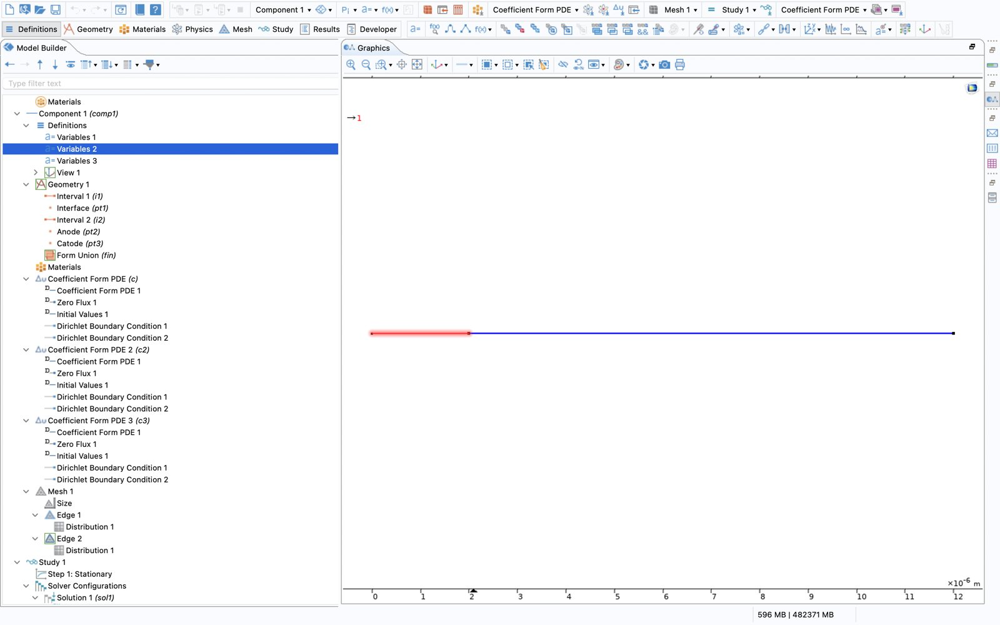
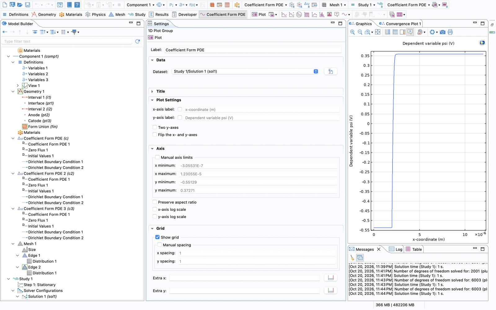
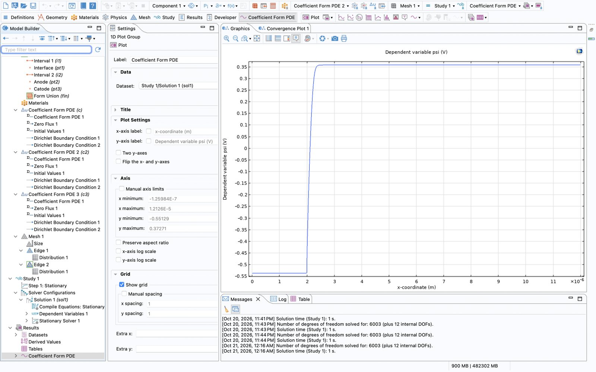

pn.junction
I don't have the Semiconductor Module, so the equations go in by hand. Upside: every assumption is something I typed, so I can also take it out later. Plan is 1D → 2D → 3D for the pn junction, then BJT and MOS. Full roadmap at the bottom.
01device
Abrupt p+/n junction, 1D. Two regions, uniform doping each. No epi, no n+ substrate (later, maybe).
anode cathode | p+ 1e19 | n 1e16 | x=0 2um 12um
Why asymmetric: depletion region sits almost all on the n side, so the one-sided formulas apply. And 1e19 on the p+ side makes Auger / bandgap narrowing visible later.
Why 10 µm of n: at breakdown (~50-60 V) depletion reaches ~2.7 µm. Has to fit.
1D = very wide diode, nothing changes along y, z. Quantities stay per volume, currents come out in A/m², multiply by area for amps.
After Form Union, points are numbered by x, not by creation order:
| entity | x | what |
|---|---|---|
| domain 1 | 0 - 2 µm | p+ |
| domain 2 | 2 - 12 µm | n |
| point 1 | 0 | anode |
| point 2 | 2 µm | junction (interior) |
| point 3 | 12 µm | cathode |
02parameters
Global Definitions → Parameters. Copy-paste ready:
T0 300[K] Vt k_B_const*T0/e_const // ~25.85 mV NA 1e19[1/cm^3] ND 1e16[1/cm^3] ni 9.65e9[1/cm^3] // not 1.5e10. J0 ~ ni^2, matters Lp_reg 2[um] Ln_reg 10[um] L_tot Lp_reg+Ln_reg A_d 1e-4[cm^2] // 100 x 100 um eps_s 11.7*epsilon0_const mun 1400[cm^2/(V*s)] // constant for now mup 470[cm^2/(V*s)] // constant for now tau_n 1[us] tau_p 1[us] V0 0[V] // anode, swept later
no Materials node. everything is a parameter.
03variables
Component 1 → Definitions → Variables. The selection decides where the variable exists.
Variables 1/2 one per domain [domain 1, p+] Ndop = -NA [domain 2, n] Ndop = ND Variables 3 [entire model] n ni*exp((psi-phin)/Vt) p ni*exp((phip-psi)/Vt) R (n*p-ni^2)/(tau_p*(n+ni)+tau_n*(p+ni)) Jn -e_const*mun*n*phinx Jp -e_const*mup*p*phipx J Jn+Jp I_tot J*A_d
Doping per domain → the step lands exactly on point 2. No if().

04equations
Unknowns are three potentials (V), not n and p. n, p span 30 orders of magnitude and Newton hates that.
| unknown | |
|---|---|
psi | electrostatic potential ψ |
phin | electron quasi-Fermi potential, EFn = −qφn |
phip | hole quasi-Fermi potential, EFp = −qφp |
Statistics (Boltzmann):
Poisson:
Continuity, steady state:
SRH, midgap trap:
where the continuity form comes from
Jn = qμnnE + qDn dn/dx. Differentiate n = niexp((ψ−φn)/VT), plug in with E = −dψ/dx and D = μVT: the ψ terms cancel and
then (1/q) dJn/dx = R. Same for holes with the sign flipped.
into COMSOL
Coefficient form: \(\nabla\cdot(-c\nabla u - \alpha u+\gamma)+\beta\cdot\nabla u + a u = f\). All three are just \(-\nabla\cdot(c\nabla u)=f\): conservation law, flux down the gradient. Only c and f nonzero.
| interface | u | u unit | f unit | c | f |
|---|---|---|---|---|---|
| c | psi | V | C/m^3 | eps_s | e_const*(p-n+Ndop) |
| c2 | phin | V | 1/s | mun*n/ni | R/ni |
| c3 | phip | V | 1/s | mup*p/ni | -R/ni |
continuity divided by ni → numbers ~1 instead of ~1e25. Same solution. Default f is 1, change it. a, ea, da, α, β, γ → 0.
Not in the model on purpose: Shockley, Vbi, W. Those are what the model should give back, so they're for checking, not input.
05boundary conditions
Ohmic contact = neutral + in equilibrium + quasi-Fermi levels pinned to the metal (φn = φp = V). From neutrality with Boltzmann:
derivation
With φn = φp = V: n − p = 2ni sinh((ψ−V)/VT). Neutrality says n − p = Ndop. Solve for ψ. For |Ndop| ≫ ni it's just V ± VT ln(|Ndop|/ni).
Dirichlet nodes (right click each interface, twice):
| point 1, anode | point 3, cathode | |
|---|---|---|
| psi | V0+Vt*asinh(-NA/(2*ni)) | Vt*asinh(ND/(2*ni)) |
| phin | V0 | 0 |
| phip | V0 | 0 |
At V0 = 0: ψanode = −0.537 V, ψcathode = +0.358 V. Difference = VT ln(NAND/ni²) = Vbi. So Vbi is already in the BCs, the solver only finds the shape in between.
Junction (point 2): nothing. Same equations on both sides → COMSOL keeps ψ, E, φ, J continuous by itself.
Zero Flux node stays in the tree, overridden at the contacts.
initial values
psi Vt*asinh(Ndop/(2*ni)) // local neutrality phin 0 phip 0
06mesh
Debye length ~1.3 nm on p+, ~41 nm on n → sub-nm at the junction. 1D is cheap.
Edge 1 [domain 1] → Distribution: exponential, fine end at x = 2 um (reversed) Edge 2 [domain 2] → Distribution: exponential, fine end at x = 2 um elements / element ratio: ? / ? <- fill in
Planned a geometric sequence (400 el ratio 200 on p+, 600 el ratio 1000 on n, ~0.1 nm at the junction), but my Distribution node has no "geometric" option, so I went with exponential. Same idea: small elements at the junction, growing towards the contacts. Domain 1 runs 0 → 2 µm, so the fine end has to be flipped.

TODO: mesh convergence check (halve elements, I-V shouldn't move >1%)
07study
Step 1 Stationary psi only (c2, c3 off) → equilibrium
Step 2 Stationary all three, init from step 1
aux sweep V0 = range(0,0.01,0.8) → I-V (not run yet)
c2/c3 off in step 1 → φn, φp stay at 0 = equilibrium. Turned off via Modify model configuration for study step.
08results, equilibrium (step 1)

| quantity | by hand | COMSOL |
|---|---|---|
| ψ p+ side | −0.537 V | −0.54 V |
| ψ n side | +0.358 V | +0.36 V |
| Vbi | 0.895 V | 0.89 V |
| W @ 0 V | 0.340 µm (0.330 w/ −2VT) | ? |
| xp @ 0 V | 0.34 nm | ? |
| Emax @ 0 V | 5.3e4 V/cm | ? |
ψ(x) zoomed, x = 1.9 - 2.6 µm
expect: parabola, almost all on the n side
ρ(x) = e_const*(p-n+Ndop), y clipped to ±2000 C/m³
expect: rectangle +qND ~0.34 µm wide on n side, −qNA spike <1 nm on p+ side
E(x) = -psix
expect: triangle, ~5.3e6 V/m peak, negative sign (points n → p).
my python Poisson check also gives a narrow spike ~1.7e5 V/cm in the first ~10 nm (hole spillover, abrupt step). see if COMSOL shows it
n(x), p(x), log scale
expect: p ≈ 1e19 / n ≈ 9 on p+, n ≈ 1e16 / p ≈ 9e3 on n (cm⁻³)
bands: -psi±0.56, -psi, EF = 0
expect: flat EF, bending ≈ 0.89 eV
09what I'm ignoring (for now)
- abrupt step, uniform doping, no epi/substrate
- 1D (no edges)
- Boltzmann (p+ at 1e19 is borderline)
- full ionization, no bandgap narrowing
- constant mobility, constant lifetimes
- SRH only, midgap trap. no Auger
- no impact ionization → no breakdown yet
- T = 300 K uniform, steady state
- ideal ohmic contacts
Theory used for checking additionally assumes sharp depletion edges, low injection, no recombination in the depletion region (Shockley), no series resistance. Where COMSOL and the formulas disagree, one of these is usually why.
10next
expected for step 2 (I-V)
Lp (holes, n side) ~33 um > neutral n region (9.7 um) → short diode J0 ~1.8e-11 A/cm^2 → I0 ~1.8e-15 A ideality 2 → 1 around 0.35-0.4 V reverse @ -10 V ~9e-8 A/cm^2 (~9 pA), SRH generation dominates
J0 above uses doping-dependent μ (430 for holes on n side). COMSOL has 470 → expect ~5% higher.
I-V forward, log scale
I-V reverse
roadmap
A 1D A0 setup ✓ A1 equilibrium ✓ A2 I-V A3 ideality/SRH A4 Auger, BGN, FD
A5 breakdown A6 temperature A7 C-V
B 2D axisymmetric, junction edge, breakdown at the edge, guard ring
C 3D quarter model, corner breakdown
D gaussian profile, epi + n+ substrate, design for BV = 100 V
E compact model → ngspice / simscape